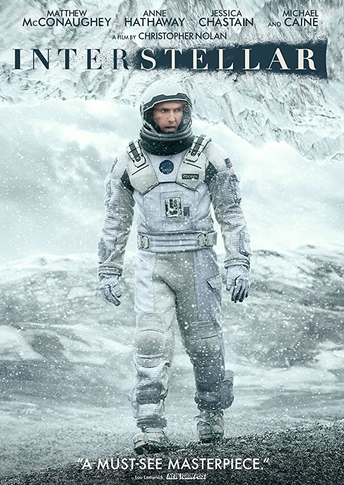

Keanu Charles Reeves (/ki/ kee-AH-noo;[4][5][6] born September 2, 1964) is a Canadian[b] actor.
Born in Beirut and raised in Toronto, Reeves began acting in theatre productions and in
television films before making his feature film debut in Youngblood (1986).
| Movie | release date | picture | Discription |
|---|---|---|---|
| Ice age | 2018/02/21 |  |
Keanu Charles Reeves (/ki/ kee-AH-noo;[4][5][6] born September 2, 1964) is a Canadian[b] actor. Born in Beirut and raised in Toronto, Reeves began acting in theatre productions and in television films before making his feature film debut in Youngblood (1986) |
| Avatar | 2022/12/16 | Avatar: The Way of Water is a 2022 American epic science fiction film directed and produced by James Cameron. He co-wrote the screenplay with Rick Jaffa and Amanda Silver from a story the trio wrote with Josh Friedman and Shane Salerno. Distributed by 20th Century Studios, it is the sequel to Avatar (2009) and the second installment in the Avatar film series. Cast members Sam Worthington, Zoe Saldaña, Stephen Lang, Joel David Moore, CCH Pounder, Giovanni Ribisi, Dileep Rao, and Matt Gerald reprise their roles from the original film, with Sigourney Weaver returning in an additional role.[6] New cast members include Kate Winslet, Cliff Curtis, Edie Falco, and Jemaine Clement. Its story follows a blue-skinned humanoid Na'vi named Jake Sully (Worthington) as he and his family, under renewed human threat, seek refuge with the aquatic Metkayina clan of Pandora, a habitable exomoon on which they live. | |
| John wick :chapter 4 | 2023/03/24 | |
John Wick: Chapter 4 is a 2023 American neo-noir action thriller film directed by Chad Stahelski and written by Shay Hatten and Michael Finch. The sequel to John Wick: Chapter 3 – Parabellum (2019) and the fourth installment in the John Wick franchise, it stars Keanu Reeves as the title character, alongside Donnie Yen, Bill Skarsgård, Laurence Fishburne, Hiroyuki Sanada, Shamier Anderson, Lance Reddick (in one of his final roles), Rina Sawayama, Scott Adkins, and Ian McShane. In the film, John Wick sets out to get revenge on the High Table and those who left him for dead. |
| Intersteller | 2010/04/17 |  | Interstellar is a 2014 epic science fiction film co-written, directed, and produced by Christopher Nolan. It stars Matthew McConaughey, Anne Hathaway, Jessica Chastain, Bill Irwin, Ellen Burstyn, Matt Damon, and Michael Caine. Set in a dystopian future where humanity is struggling to survive, the film follows a group of astronauts who travel through a wormhole near Saturn in search of a new home for mankind. |